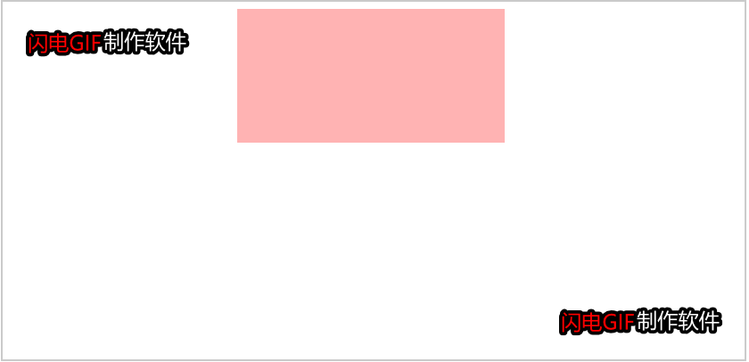

封装了一个JS方法，支持元素的基本动画：宽、高、透明度...等，也支持链式动画和同时运动。
获取元素的属性的函数并进行了兼容性处理：
1 function getStyle(obj, attr) {
2 if(obj.currentStyle){ //IE浏览器
3 return obj.currentStyle[attr];
4 }else{ //chrome、firefox等浏览器
5 return getComputedStyle(obj,null)[attr];
6 }
7 }动画函数：
1 var timer = null; // 声明一个timer来存储定时器
2 function animate(obj, json, callback) {
3 clearInterval(obj.timer);
4 obj.timer = setInterval(function() {
5 /*
6 * 当我们改变多个属性时，如果其中一个属性已经达到目标值，就会清除定时器，就会导致其他没有达到目标值的属性也会停止
7 * 为了解决这个问题，我们声明一个节流阀flag，让它为true
8 * 判断是否还有没达到目标值的属性，如果还有，就让flag为false（关闭节流阀），让定时器继续执行
9 * 当所有属性都达到了目标值时，才执行清除定时器那一步
10 */
11 var flag = true;
12 for(var attr in json) { // for...in...遍历对象
13 var icur = 0; // 存储获取过来的属性值
14 if(attr == 'opacity') { // 判断获取过来的属性是否为opacity
15 icur = Math.round(parseFloat(getStyle(obj, attr)) * 100); // float会有小误差，所以需要四舍五入一下
16 } else {
17 icur = parseInt(getStyle(obj, attr)); // 获取过来的值可能带单位，所以需要用到parseInt()
18 }
19 var speed = (json[attr] - icur) / 10; // 速度 逐渐变慢（也可以设为固定值实现匀速运动）
20 speed = speed > 0 ? Math.ceil(speed) : Math.floor(speed); // speed并不总是整数，会导致和目标值不相等，所以需要对speed进行取整，大于0向上取整，小于0向下取整
21 if(icur != json[attr]) { // 判断是否还有属性没有达到目标值
22 flag = false;
23 }
24 if(attr == 'opacity') { // opacity是没有单位的，所以在这里需要判断一下
25 obj.style.filter = 'alpha(opacity = '+ (icur + speed) +')';
26 obj.style.opacity = (icur + speed) / 100; // opacity别忘了除以100
27 } else {
28 obj.style[attr] = icur + speed + 'px'; // 原来的值加上速度赋值给属性
29 }
30 }
31 if(flag) { // 当所有属性都达到目标值，即flag为true时，再停止定时器
32 clearInterval(obj.timer);
33 callback && callback(); // 判断是否有回调函数，有的话就执行
34 }
35 }, 25)
36 }
接下来我们来测试一下：
1 var box = document.querySelector('.box');
2 box.addEventListener("mouseover", function() {
3 animate(this, {width: 300, height: 200, opacity: 100}, function() {
4 animate(box, {width: 200, height: 100, opacity: 30});
5 });
6 });结果如下：
